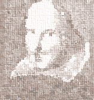

Cind eram un copilas
Hei, ce ploaie si ce vint!
Tare mai eram poznas
Fiindca ploua pe pamint.
Iar cind mi-a mijit mustata
Hei, ce ploaie si ce vint!
Tot in ris am luat viata,
Fiindca ploua pe pamint.
Dar de cind m-a ars napasta,
Tii, ce ploaie si ce vint!
Si mi-am luat si eu nevasta
Ploua-ntruna pe pamint.
Si de-atuncea, lua-o-ar gaia
Fie ploaie, fie vint,
Beau si eu cit toata ploaia
Care cade pe pamint.
Piesa-i gata, trag oblonul,
Tii, ce ploaie si ce vint!
Daca v-a placut bufonul,
Mai poftiti si miine seara!
|  |
|